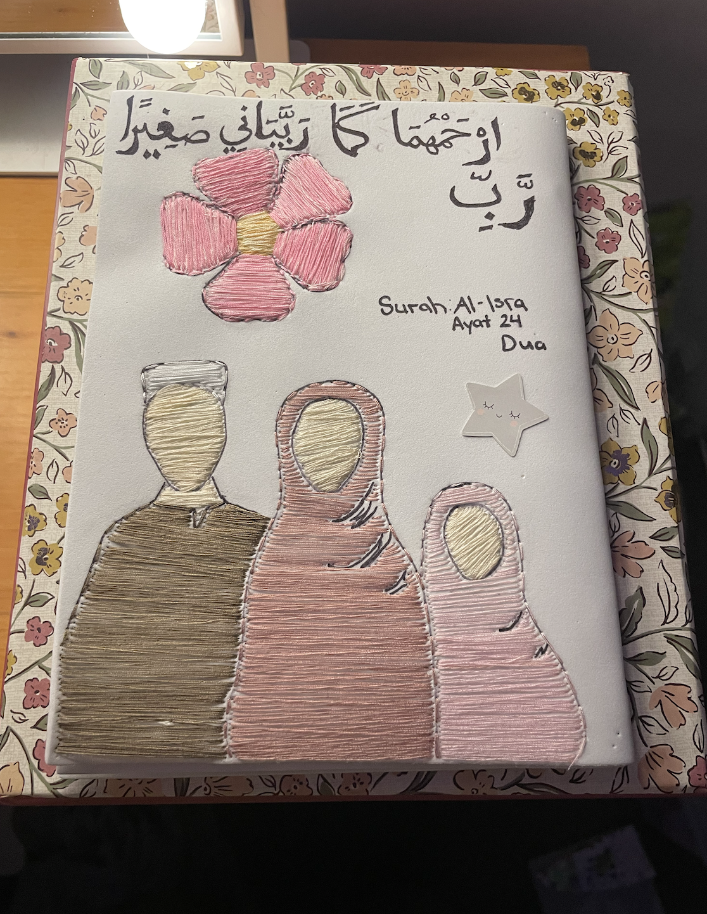
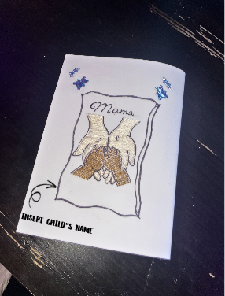
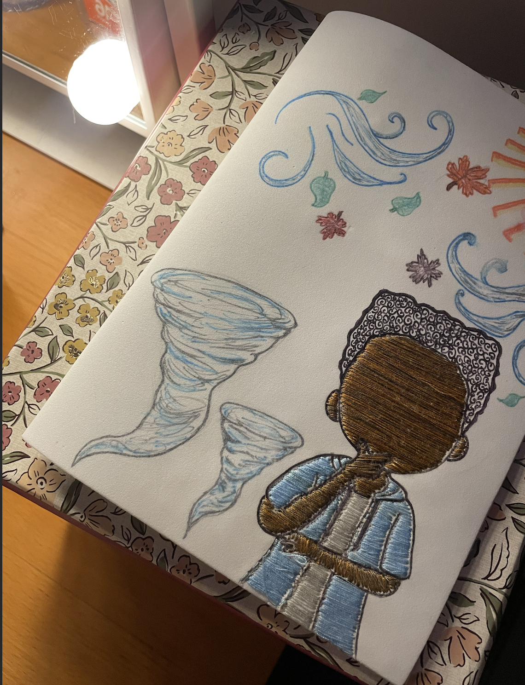
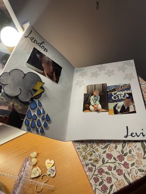
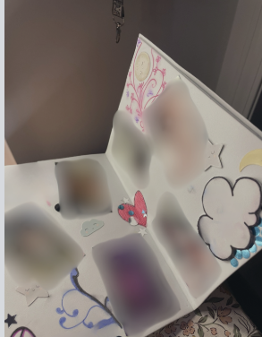

There are 18 flowers in the bigger bouquet (yellow). A mini bouquet has 5 purple flowers. You can choose separate or combined bouquets. Pricing: $15–$22 depending on quantity and materials.
This custom foam book includes a prayer (dua) and can be customized with your family, quotes, or phrases. Price estimate: $25–$30 depending on design.

Ideal for gifts or personal keepsakes. Includes 3D cutouts and can be personalized in many ways.

Close-up to show handcrafted detail. You can send photos to be converted into thread art.
Custom foam book made for a 5-year-old who loves nature. Personalized to match any theme.
 Interior pages show special memories, custom fonts, and themes like nature or family moments.
This version has more support and can include up to 6 pages. Great for families who want more customization and detail.
*Some images have faces intentionally blurred for privacy. Pictures are optional. Alternatives are available.